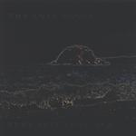

| Artist: | The Lost Vegas |
| Title: | Surf Psychedelica |
| Label: | Worldwide Ocean Compact Discs WW-44PSY |
| Length(s): | 29 minutes |
| Year(s) of release: | 2001 |
| Month of review: | [03/2002] |
| 1) | The Trip | 4.17 |
| 2) | D-thing | 3.34 |
| 3) | Baby, You're A Rich Man | 4.17 |
| 4) | Psychedelos | 1.28 |
| 5) | Mexican Interlude | 4.10 |
| 6) | Powderfinger | 4.39 |
| 7) | The Space Song | 3.14 |
| 8) | Elopa | 3.11 |
D-Thing is catchy sixties pop with a strong guitar sound, accidental notes on piano. On the whole the music is quite boogie like and has plenty of swing. The production is very clear. The vocal style is distinctive: somebody is singing after someone "else".
The Beatles cover, Baby You're A Rich Man, is not a well-known song. At least I could not recall ever having heard it. I am not too happy about the rather boring chorus, the verses have an Eastern/Indian feel.
Shadows on speed we find in the typical surf instrumental Psychedelos. Mexican Interlude has somewhat rap like singing, or maybe more like David Thomas of Pere Ubu. The guitar is melodious, the rhythm section again does good work, the piano is used percussively and on the whole this is a very varied track.
Powderfinger is a Neil Young cover and yes now I hear it, I recognize it again. Rhythmically this song is rather boring and of course the typical vocals of Young are lacking. The band did add a surf like sound to it, by means of the guitar.
Surf and Chris Isaak we find on The Sapce Song. The vocals are well known, spoken and sung. The song lacks a bit in energy, but it is at least more dynamic than the previous track.
We close down with the bass line of Elopa which can be described as desert surf (quite a contrast!). Melodically strong, the organ also chips in this time.